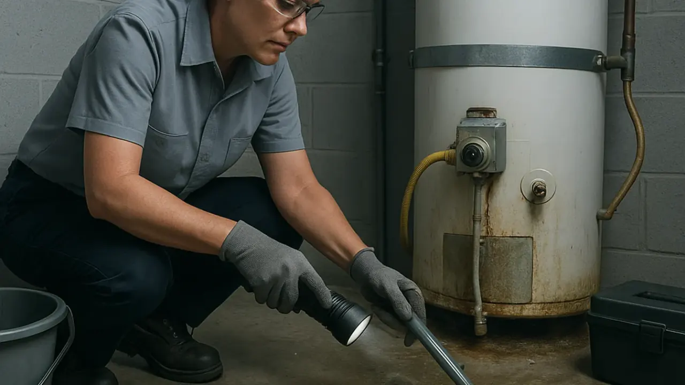

Frequent drain backups
A drain that backs up again and again is telling you the blockage is still there. Our team provides effective drain cleaning services in California to eliminate blockages and restore proper drainage.
A slow drain is rarely just a slow drain. It is usually grease, hair, soap or debris building up inside the pipe, and a plunger only moves the top of it. Our drain cleaning services in California clear the blockage properly, using drain augers, plumbing snakes and high-pressure water jetting, and then check that the drain is actually flowing freely again.
What this service is: Drain cleaning is the removal of blockages and buildup from your plumbing system, using specialized tools such as plumbing snakes and drain augers, so water drains freely again. It covers kitchen sinks, bathroom sinks and tubs, and main lines, and it is as much about prevention as repair: a drain cleaned properly today is a drain that does not back up next month.

Drain cleaning services in California involve the removal of blockages and buildup in your plumbing system. This process typically includes the use of specialized tools like plumbing snakes and drain augers to clear out debris, grease, and other obstructions that can lead to serious plumbing issues if they are left in place.
Local customers often need drain cleaning because of common issues such as slow drains, foul odors, and frequent backups. Kitchen sinks collect grease and food, bathroom drains collect hair and soap, and main lines collect everything at once. Regular drain cleaning helps prevent these problems, keeping your plumbing system running smoothly and reducing the need for costly repairs.
In California homes the pattern is consistent: kitchen drains clog on grease and food, bathroom drains clog on hair and soap, and main lines collect everything at once. Older homes add their own problems, with pipes that have narrowed over years of buildup. That is why a drain visit starts with finding out which drains are affected and how far down the problem sits, rather than reaching for a tool straight away. A drain cleared without finding the cause is a drain that will block again.
A drain cleaning visit is not one tool and a quick look. It covers inspection, the right cleaning method for the blockage, and advice on keeping the drain clear afterwards.
We conduct a thorough inspection of your drains to identify any underlying issues that may cause future problems, so a cleared drain does not hide a damaged pipe or a deeper blockage further down the line.
Our team uses high-pressure water jetting to effectively clear stubborn clogs and buildup in your pipes, washing grease and debris off the pipe walls rather than only punching a hole through the blockage.
We use drain snakes to remove blockages in hard-to-reach areas, ensuring a complete clean where a jet or a plunger cannot reach, such as a bend or a narrow section of pipe.
After the service, we provide valuable tips on how to maintain your drains and prevent future clogs, including what should never go down a kitchen sink or a bathroom drain.
We clear the main line that serves the whole home, not just the fixture that is slow. A main line blockage affects every drain in the house, so it is checked and cleared as part of the service when the symptoms point to it.
After cleaning, we run water at every affected fixture and check that it drains at full speed. A drain that is only partly clear will slow down again within days, so the flow test is part of the job, not an extra.
Our technician begins with a comprehensive assessment of your plumbing system, identifying any potential issues. This step typically takes 30-60 minutes, depending on the complexity, and it decides which cleaning method fits the blockage.
We prepare the work area by removing any obstacles and ensuring access to the drains. This helps us work efficiently and safely, and it keeps your home clean while the work is done.
Using advanced tools like drain augers and plumbing snakes, we clear blockages and buildup from your pipes. This process usually takes 1-2 hours, depending on the severity of the clog, and high-pressure water jetting is used where the buildup needs it.
After cleaning, we conduct a final inspection to ensure all debris has been removed and the drainage is functioning properly. This step ensures peace of mind for our clients: the drain is not only clear, it is checked.
We provide a detailed walkthrough of the work completed, explaining any findings and offering maintenance tips. This ensures you know how to keep your drains in top shape and what to watch for next time.
Here is what happens when our technician visits, in order:
Most drain calls fall into a few familiar patterns. If your drain looks like one of these, the cause is usually the same, and so is the fix.
This is the most common drain call we get. Grease from cooking coats the inside of the pipe a little at a time, and food particles stick to it. The sink drains a little slower each week until one day it barely drains at all. A plunger may move the top of the blockage, but it does not remove the grease coating the pipe walls. That is why the fix is usually high-pressure water jetting, which washes the pipe clean, followed by advice on keeping grease out of the sink in future.
When the bathroom sink, the tub and the shower all drain slowly, the blockage is usually not in any one fixture. It is further down the line, where the bathroom drains join together, and it is usually hair and soap buildup. The technician checks each fixture, then works from the clean-out or the main bathroom drain, and clears the shared section. If only one fixture is slow, the problem is local to that fixture, and the fix is quicker.
Running the washing machine and watching water rise in the shower, or flushing a toilet and hearing the bathtub gurgle, means the main line is partly blocked. Water from one fixture has nowhere to go, so it comes up through the lowest fixture instead. This is the drain problem to act on fastest, because a partial main line blockage can become a full sewage backup. The visit starts with a camera inspection of the main line, so the blockage is found before any clearing begins.
Purpose-built equipment, used by trained technicians — so the job is done accurately the first time.
Used to break up and remove stubborn clogs in pipes, ensuring a thorough clean where a plunger cannot reach.
Effective for clearing out heavy buildup and debris in drains, restoring proper flow by washing the inside of the pipe.
A flexible tool that helps reach and eliminate blockages in hard-to-access areas, such as bends and narrow runs of pipe.
Allows us to visually inspect the inside of your pipes for accurate diagnosis and targeted solutions, so we can see the blockage instead of guessing at it.
Used to remove standing water from a backed-up sink, tub or floor before cleaning begins, so the work area is dry and the blockage can be reached safely.
The kitchen sink was frequently clogged, causing water to back up and overflow.
After our drain cleaning, water flows freely, and the kitchen is now functional without interruptions.
The bathroom sink drained slowly, leading to standing water after use.
After the service, the sink drains quickly, enhancing daily routines and comfort.
The home experienced frequent sewage backups, disrupting daily life.
After our thorough cleaning, the mainline is clear, ensuring no more backups.
Drains give warnings before they fail completely. These are the three problems our drain cleaning services are called for most often, and each one is easier to fix when it is caught early.
Ask a pro →A drain that backs up again and again is telling you the blockage is still there. Our team provides effective drain cleaning services in California to eliminate blockages and restore proper drainage.
A bad smell from a drain usually means buildup is sitting in the pipe. We use specialized techniques to clean your drains thoroughly, eliminating odors and ensuring a healthy environment.
A sink or tub that drains slowly is a partial blockage that will get worse. Our drain unclogging services in California effectively clear slow drains, restoring functionality.
A drain that gurgles is partly blocked and pulling air through the water in the trap. It is an early warning: the blockage is still small enough to clear easily, but it will grow. We find where the partial blockage sits and clear it before it becomes a full backup.
Water from one fixture appearing in another, such as the shower filling when the washing machine runs, means the main line is blocked. Our camera inspection finds the blockage in the main line, and our drain cleaning clears it so every fixture drains properly again.
$150 - $450 depending on scope
Pricing for drain cleaning services in California typically ranges from $150 to $450, depending on the complexity of the job. Factors such as the severity of the blockage and the time required for cleaning can influence the final cost. A single slow sink is a shorter job than a main line that backs up, and the method matters too: hydro jetting costs more than snaking, because it does more. Our transparent pricing ensures you know what to expect before we begin work.
Investing in professional drain cleaning saves money in the long run by preventing major plumbing issues. A drain cleaned once a year is far cheaper than a backup that floods a bathroom or a kitchen.
Before any work begins you get a written estimate, and the estimate says which method will be used, because the method changes the price. Snaking breaks through a blockage; hydro jetting washes the whole pipe clean and costs more, because it does more. If the camera finds damage that cleaning cannot fix, such as a cracked or collapsed section of pipe, that is a separate repair: it is shown to you and quoted separately, and nothing is done without your approval.
More severe clogs may require additional time and resources, raising the cost. A light buildup that clears in an hour costs less than a main line blocked solid.
Different methods, like hydro jetting vs. snaking, have varying costs associated with them. Hydro jetting washes the whole pipe clean; snaking breaks through the blockage. The right method depends on what is actually in the pipe.
Difficult-to-reach drains may require specialized tools and techniques, impacting pricing. A drain behind a wall or under a floor takes longer to reach than one with a clean-out at hand.
One slow sink is a shorter job than several fixtures draining slowly, and a blocked main line is a bigger job than either. The more of the system that is affected, the more the visit takes.
Typical costs range from $150 - $450, depending on scope. The table below shows the factors that move the price up or down.
| Cost factor | How it affects the price |
|---|---|
| Severity of the clog | More severe clogs may require additional time and resources, raising the cost. A light buildup that clears in an hour costs less than a main line blocked solid. |
| Type of cleaning method | Different methods, like hydro jetting vs. snaking, have varying costs associated with them. Hydro jetting washes the whole pipe clean; snaking breaks through the blockage. The right method depends on what is actually in the pipe. |
| Accessibility of the drain | Difficult-to-reach drains may require specialized tools and techniques, impacting pricing. A drain behind a wall or under a floor takes longer to reach than one with a clean-out at hand. |
| Number of drains affected | One slow sink is a shorter job than several fixtures draining slowly, and a blocked main line is a bigger job than either. The more of the system that is affected, the more time and equipment the visit takes. |
| Planned visit or urgent call | A planned yearly clean is the cheapest drain work there is. A drain that is backing up sewage cannot wait, and an urgent call is priced on what the job actually needs, including when it happens. |
| Camera inspection needed | A camera inspection is used when the blockage is not where it should be, or the drain has blocked more than once. It adds to the visit, but it finds damage, roots or a collapsed section that clearing alone would miss. |
“I had persistent clogs in my kitchen sink, and the team quickly diagnosed the issue. Their drain cleaning services in California were effective, and I haven't had a problem since!”
John D.Homeowner, San Francisco
✓ Verified“We rely on their drain unclogging services in California for our rental properties. They are always prompt, professional, and get the job done right.”
Maria S.Property Manager, Chula Vista
✓ Verified“Our restaurant faced severe drainage issues. Thanks to their expert drain cleaning, we can now serve our customers without interruptions. Highly recommend!”
Kevin L.Business Owner, Santa Clarita
✓ VerifiedBefore you book drain cleaning in California, compare plumbers on the things that decide whether a drain job goes well. Here is what to check:
It is recommended to have drain cleaning services in California at least once a year to prevent clogs and maintain a healthy plumbing system. A yearly clean stops grease, hair and soap from building up to the point where a drain slows down or backs up, and it costs far less than an emergency call for a blocked main line.
Signs include slow drainage, gurgling sounds, and unpleasant odors. If you notice these issues, it is time for professional drain unclogging in California. A drain that gurgles is often partly blocked and pulling air; a drain that smells has buildup sitting in the pipe. Both get worse if they are ignored.
Typical costs for drain cleaning services in California range from $150 to $450, depending on the severity of the blockage and the time required. A single slow sink sits at the lower end; a main line that backs up, or a job that needs hydro jetting, sits at the higher end. You get a written estimate before work begins.
Common methods include hydro jetting, snaking, and using chemical cleaners. Our team evaluates the best approach based on your specific situation. Snaking breaks through a blockage, hydro jetting washes the pipe clean, and video inspection equipment lets us see inside the pipe so the method matches the actual problem.
The initial assessment typically takes 30-60 minutes, depending on the complexity. The cleaning procedure usually takes 1-2 hours, depending on the severity of the clog. A simple sink blockage is a shorter job than a main line that needs jetting and a final inspection.
Our technician starts with a comprehensive assessment, prepares the work area so the drains are accessible, clears the blockage with drain augers or plumbing snakes, then does a final inspection and a walkthrough with maintenance tips. The walkthrough matters: it tells you what caused the clog and how to stop it coming back.
After the service, we provide maintenance tips on how to keep your drains in top shape. We also recommend drain cleaning at least once a year to prevent clogs and maintain a healthy plumbing system. The simplest habits help most: keep grease out of the kitchen sink, and do not let hair and soap build up in bathroom drains.
It is better not to. Chemical drain cleaners rarely remove the grease and buildup coating the inside of a pipe, so the drain usually slows down again soon after. They can also damage older pipes and seals, and they make the technician's job harder, because the chemical is still sitting in the pipe when the drain is opened. If you have already used one, tell the technician when you book, so the visit can be planned safely. A professional clean with a snake or a jet removes the blockage properly instead of only burning a small hole through it.
A drain that clogs again quickly was usually only partly cleared. Snaking breaks a hole through a blockage so water can pass, but it leaves grease and buildup on the pipe walls, and the hole closes up again. Hydro jetting washes the walls clean, which is why it lasts longer on a grease-coated pipe. The other common reason is that the cause was never found: a damaged section of pipe, a belly in the line, or roots in a main line will keep catching debris until the pipe itself is fixed. That is why a repeat blockage is checked with a camera, so the real cause is found instead of the same drain being cleared again.
Yes. Older homes are a large part of our drain work, and they need a different approach. Older pipes may be cast iron or clay, and they can be narrowed by years of buildup or damaged by roots, so the first step is usually a camera inspection to see what the pipe is actually like. The cleaning method is then matched to the pipe: jetting pressure is kept to what the pipe can take, and a snake is used carefully where the pipe is fragile. If the camera shows a cracked or collapsed section, cleaning alone will not fix it, and that is discussed with you before any repair is quoted.
Our drain cleaning services extend across California, ensuring residents in various cities have access to expert plumbing solutions. We cater to both urban and suburban areas, addressing local plumbing needs effectively.

Emergency Plumbing ServicesOur emergency plumbing services are available 24/7 to handle urgent drain issues, ensuring you're never left without help.Explore → Residential PlumbingWe offer comprehensive residential plumbing services, including drain cleaning and repairs, tailored to meet your home's needs.Explore →
Residential PlumbingWe offer comprehensive residential plumbing services, including drain cleaning and repairs, tailored to meet your home's needs.Explore → Commercial PlumbingOur commercial plumbing services include drain cleaning for businesses, ensuring minimal disruption to your operations.Explore →
Commercial PlumbingOur commercial plumbing services include drain cleaning for businesses, ensuring minimal disruption to your operations.Explore → Sewer Line RepairWe provide sewer line repair services that often complement our drain cleaning, addressing deeper plumbing issues effectively.Explore →
Sewer Line RepairWe provide sewer line repair services that often complement our drain cleaning, addressing deeper plumbing issues effectively.Explore → Water Heater Repair & InstallationOur water heater services ensure you have reliable hot water, which can also impact your plumbing system's efficiency.Explore →
Water Heater Repair & InstallationOur water heater services ensure you have reliable hot water, which can also impact your plumbing system's efficiency.Explore → Leak Detection & RepairWe offer leak detection and repair services that work hand-in-hand with drain cleaning to maintain your plumbing system.Explore →
Leak Detection & RepairWe offer leak detection and repair services that work hand-in-hand with drain cleaning to maintain your plumbing system.Explore → Sump Pump & Pipe Leak RepairOur sump pump and pipe leak repair services help prevent water damage, supporting the overall health of your plumbing.Explore →
Sump Pump & Pipe Leak RepairOur sump pump and pipe leak repair services help prevent water damage, supporting the overall health of your plumbing.Explore → Toilet Repair & InstallationWe can repair or install toilets, ensuring your bathroom plumbing is functioning correctly and efficiently.Explore →
Toilet Repair & InstallationWe can repair or install toilets, ensuring your bathroom plumbing is functioning correctly and efficiently.Explore →Don't let clogged drains disrupt your life. Contact our team for expert drain cleaning services in California and ensure your plumbing is functioning smoothly. Get a free estimate first: a local dispatcher will confirm your visit shortly, and you get an estimate before work begins.
Get a free estimate +1 (619) 612-9370 →Reach out to us for all your plumbing needs in California. Our team is available to answer your questions and provide quick service. We aim to respond within an hour!